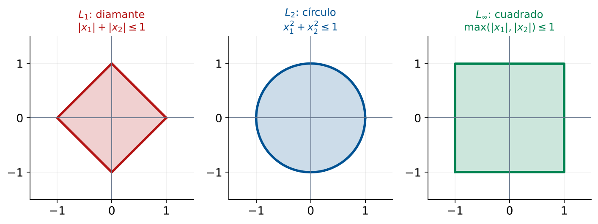

Normas de Vectores: L1, L2 y L∞
Interpretación del Error en Logística
Módulo 6 — Herramientas de Ingeniería
Matemáticas 2 — Clase 28
Cátedra de Matemáticas 2
Ingeniería en Logística
Clase 28 — Inicio Módulo 6
Contenidos de la Clase
- Inicio del Módulo 6: Herramientas de Ingeniería
- Objetivos de Aprendizaje
- ¿Qué es una Norma?
- Norma L1: Suma de Valores Absolutos
- Norma L2: Raíz de Suma de Cuadrados
- Norma L∞: Máximo Valor Absoluto
- Resumen: Las Tres Normas
- Bolas Unitarias: Geometría de cada Norma
- Caso: Errores de Distribución en una Red
- Selección de la Norma Según Objetivo
- MATLAB: Calcular Normas con norm()
- MATLAB: Comparar Normas entre Modelos
- MATLAB: Visualización de Bolas Unitarias
- Resumen: Cómo Elegir la Norma
- Punto de Decisión
- Tarea para la Clase 29
- Referencias
Inicio del Módulo 6: Herramientas de Ingeniería
Mod. 4
Espacios
Mod. 5
Regresión
Clase 28
Normas
Clase 29
Redes
Clase 30
Eigenval.
¿Qué cubre el Módulo 6?
Herramientas matemáticas avanzadas de uso directo en ingeniería logística:
• Normas de vectores para medir errores y distancias
• Matrices de adyacencia para modelar redes
• Eigenvalores para analizar la estabilidad de sistemas
Objetivos de Aprendizaje
Al finalizar esta clase el estudiante será capaz de:
- Definir las normas L1, L2 y L∞ de un vector.
- Calcular cada norma manualmente y con
norm(v,p) en MATLAB.
- Interpretar geométricamente las "bolas unitarias" de cada norma.
- Relacionar L1 con MAE, L2 con RMSE y L∞ con el error máximo.
- Seleccionar la norma adecuada según el objetivo logístico.
- Aplicar normas para comparar errores de distribución en una red.
Conexión con Módulo 5
En el Módulo 5 calculamos MAE y RMSE para evaluar modelos.
Clase 28: MAE y RMSE son normas de vectores de residuos.
La elección de la norma determina qué tipo de error se minimiza.
¿Qué es una Norma?
Definición
Una
norma \(\|\cdot\|\) en \(\mathbb{R}^n\) es una función que asigna a cada vector \(\mathbf{x} \in \mathbb{R}^n\) un número real no negativo y que satisface:
- N1: \(\|\mathbf{x}\| \geq 0\) y \(\|\mathbf{x}\|=0 \Leftrightarrow \mathbf{x}=\mathbf{0}\)
- N2: \(\|c\mathbf{x}\| = |c|\,\|\mathbf{x}\|\) para \(c \in \mathbb{R}\)
- N3: \(\|\mathbf{x}+\mathbf{y}\| \leq \|\mathbf{x}\|+\|\mathbf{y}\|\) (desigualdad triangular)
Intuición: una norma es una medida de tamaño o longitud del vector.
En logística: mide el tamaño del error de distribución, la distancia entre almacenes, o la magnitud de una desviación del plan.
La norma más familiar: L2 (longitud euclidiana)
Para \(\mathbf{x} = (3, 4)^T\): \(\|\mathbf{x}\|_2 = \sqrt{3^2+4^2} = \sqrt{25} = 5\).
Esta es la "distancia euclidiana" del punto \((3,4)\) al origen.
Norma L1: Suma de Valores Absolutos
Norma L1 (norma de Manhattan)
\[ \|\mathbf{x}\|_1 = \sum_{i=1}^n |x_i| = |x_1| + |x_2| + \cdots + |x_n| \]
Ejemplo: \(\mathbf{e} = (5, -3, 8, -2)^T\) (errores de distribución en 4 rutas, ton)
\[ \|\mathbf{e}\|_1 = |5|+|-3|+|8|+|-2| = 5+3+8+2 = 18 \text{ ton} \]
Interpretaciones logísticas
- Distancia Manhattan: número de cuadras en una grilla urbana de reparto.
- MAE: \(\text{MAE} = \frac{1}{n}\|\mathbf{e}\|_1 = \frac{18}{4} = 4.5\) ton por ruta.
- Minimizar \(\|\mathbf{e}\|_1\) es equivalente a minimizar el MAE.
Cuándo usar L1
Cuando todos los errores tienen el mismo costo unitario independientemente de su magnitud.
Ejemplo: costo de reposición = $50/ton sin importar si el error es 1 ton o 10 ton.
Norma L2: Raíz de Suma de Cuadrados
Norma L2 (norma euclidiana)
\[ \|\mathbf{x}\|_2 = \sqrt{\sum_{i=1}^n x_i^2} = \sqrt{x_1^2 + x_2^2 + \cdots + x_n^2} \]
Ejemplo: mismos errores \(\mathbf{e} = (5,-3,8,-2)^T\):
\[ \|\mathbf{e}\|_2 = \sqrt{25+9+64+4} = \sqrt{102} \approx 10.1 \text{ ton} \]
Interpretaciones logísticas
- Distancia euclidiana: distancia real entre dos puntos en el espacio.
- RMSE: \(\text{RMSE} = \frac{1}{\sqrt{n}}\|\mathbf{e}\|_2 = \frac{10.1}{\sqrt{4}} = 5.05\) ton.
- Minimizar \(\|\mathbf{e}\|_2^2\) (MCO) es equivalente a minimizar la SCR.
Cuándo usar L2
Cuando los errores grandes son desproporcionadamente peores.
Ejemplo: una ruptura de stock de 10 ton es más del doble de grave que 5 ton (penalidades contractuales, pérdida de clientes).
Norma L∞: Máximo Valor Absoluto
Norma L∞ (norma del supremo)
\[ \|\mathbf{x}\|_\infty = \max_{i=1,\ldots,n} |x_i| \]
El valor absoluto máximo de las componentes del vector.
Ejemplo: \(\mathbf{e} = (5,-3,8,-2)^T\):
\[ \|\mathbf{e}\|_\infty = \max(|5|,|-3|,|8|,|-2|) = \max(5,3,8,2) = 8 \text{ ton} \]
Interpretaciones logísticas
- El peor caso: el error más grande que puede ocurrir en cualquier ruta.
- Minimizar \(\|\mathbf{e}\|_\infty\) garantiza que ningún error supere un umbral.
- Equivalente a minimizar el error máximo (minimax).
Cuándo usar L∞
Cuando el sistema no tolera ningún error grande, independientemente del promedio.
Ejemplo: distribución de medicamentos urgentes o suministros críticos.
Un solo fallo grave puede ser inaceptable aunque el promedio sea bueno.
Resumen: Las Tres Normas
Para \(\mathbf{e} = (5,-3,8,-2)^T\) (errores en 4 rutas, toneladas):
| Norma | Fórmula | Valor | Métrica equiv. | Minimizar cuando... |
|---|
| L1 | \(\sum|e_i|\) | 18 ton | MAE×n | Errores tienen igual costo |
| L2 | \(\sqrt{\sum e_i^2}\) | 10.1 ton | RMSE×√n | Errores grandes son peores |
| L∞ | \(\max|e_i|\) | 8 ton | Error máximo | No se tolera ningún fallo |
Relación entre normas (siempre válida)
\[ \|\mathbf{e}\|_\infty \leq \|\mathbf{e}\|_2 \leq \|\mathbf{e}\|_1 \]
\[ 8 \leq 10.1 \leq 18 \quad\checkmark \]
Caso especial: errores uniformes
Si todos los errores son iguales \(|e_i| = c\): todas las normas son proporcionales.
\(\|\mathbf{e}\|_1 = nc\), \(\|\mathbf{e}\|_2 = c\sqrt{n}\), \(\|\mathbf{e}\|_\infty = c\).
Bolas Unitarias: Geometría de cada Norma
Bola unitaria de la norma p
Conjunto de puntos \(\mathbf{x} \in \mathbb{R}^2\) con \(\|\mathbf{x}\|_p \leq 1\).

Bolas unitarias en \(\mathbb{R}^2\): \(L_1\subset L_2\subset L_\infty\)
Interpretación
- L1: diamante (cuadrado rotado). Favorece soluciones con muchos ceros (sparse).
- L2: círculo. Distribuye el error uniformemente.
- L∞: cuadrado. Limita el error máximo en cada componente.
La forma de la bola indica qué tipo de error se penaliza menos.
En optimización, la norma elegida determina la forma de la solución.
Caso: Errores de Distribución en una Red
Una empresa distribuye desde un CD hacia 5 clientes. El error de entrega (demanda real – cantidad entregada, en toneladas) es:
\[ \mathbf{e} = \begin{pmatrix} 3 \\ -8 \\ 1 \\ -2 \\ 6 \end{pmatrix} \leftarrow \begin{array}{l} \text{Cliente 1: +3 ton (entregó de menos)} \\ \text{Cliente 2: -8 ton (entregó de más)} \\ \text{Cliente 3: +1 ton (de menos)} \\ \text{Cliente 4: -2 ton (de más)} \\ \text{Cliente 5: +6 ton (de menos)} \end{array} \]
Calcular las tres normas:
\[ \|\mathbf{e}\|_1 = 3+8+1+2+6 = 20 \text{ ton} \]
\[ \|\mathbf{e}\|_2 = \sqrt{9+64+1+4+36} = \sqrt{114} \approx 10.68 \text{ ton} \]
\[ \|\mathbf{e}\|_\infty = \max(3,8,1,2,6) = 8 \text{ ton (Cliente 2)} \]
¿Qué indican los resultados?
L1: en total se erraron 20 toneladas. MAE = 20/5 = 4 ton por cliente.
L2: RMSE = 10.68/√5 = 4.78 ton (los errores no son uniformes).
L∞: el cliente 2 tiene el mayor error (8 ton, 40% del total L1).
Selección de la Norma Según Objetivo
Mismo vector de errores \(\mathbf{e} = (3,-8,1,-2,6)^T\). Tres objetivos distintos, tres normas distintas:
Objetivo: minimizar costo total de reposición
Cada tonelada mal distribuida cuesta $50 de corrección.
Usar L1: minimizar \(\sum|e_i|\).
Costo total: \(20 \times \$50 = \$1.000\).
Objetivo: minimizar varianza del error
Los errores grandes tienen costo desproporcionado (penalidades contractuales).
Usar L2: minimizar \(\sum e_i^2\).
RMSE = 4.78 ton.
Objetivo: garantizar nivel de servicio
Ningún cliente puede recibir más de 5 ton de diferencia.
Usar L∞: minimizar \(\max|e_i|\).
Actual: 8 ton. Viola el criterio.
Decisión
Para este caso: usar L∞ como criterio primario de aceptación (ninguno > 5 ton) y L1 como criterio de optimización del costo. El cliente 2 requiere atención inmediata.
MATLAB: Calcular Normas con norm()
% Vector de errores de distribucion (ton)
e = [3; -8; 1; -2; 6];
n_clientes = length(e);
% Calcular las tres normas
L1 = norm(e, 1); % suma de |e_i|
L2 = norm(e, 2); % raiz de suma de cuadrados (default)
Linf = norm(e, Inf); % maximo de |e_i|
fprintf('=== NORMAS DEL VECTOR DE ERRORES ===\n')
fprintf('L1 (norma 1): %.4f ton\n', L1)
fprintf('L2 (norma 2): %.4f ton\n', L2)
fprintf('Linf (norma inf): %.4f ton\n', Linf)
% Equivalencia con metricas de pronostico
MAE = L1 / n_clientes;
RMSE = L2 / sqrt(n_clientes);
fprintf('\nEquivalencias con metricas de pronostico:\n')
fprintf('MAE = L1/n = %.4f ton\n', MAE)
fprintf('RMSE = L2/sqrt(n) = %.4f ton\n', RMSE)
fprintf('Error max = Linf = %.4f ton\n', Linf)
% Verificar relacion L1 >= L2 >= Linf
fprintf('\nVerificacion L1 >= L2 >= Linf:\n')
fprintf(' %.4f >= %.4f >= %.4f [%s]\n', ...
L1, L2, Linf, string(L1>=L2 && L2>=Linf)) % imprime true/false
% Identificar el cliente con mayor error
[max_err, idx_max] = max(abs(e));
fprintf('\nCliente con mayor error: %d (error = %.1f ton)\n', idx_max, e(idx_max))
fprintf('Accion prioritaria: visitar al Cliente %d\n', idx_max)
Salida esperadaL1 = 20.0000 · L2 = 10.6771 · Linf = 8.0000 · MAE = 4.0000 · RMSE = 4.7749 · Cliente con mayor error: 2 (error = -8.0 ton)
MATLAB: Comparar Normas entre Modelos
Salida esperada: Plan A: L1 = 23, L2 = 10.909, L∞ = 8 · Plan B: L1 = 18, L2 = 7.616, L∞ = 4. El plan B es mejor en las tres normas y cumple el umbral de 5 ton.
% Plan A y Plan B: errores de entrega (ton) en 6 rutas
e_A = [4; -5; 2; -3; 8; -1]; % plan actual
e_B = [2; -3; 4; -4; 3; -2]; % plan propuesto
fprintf('Comparacion de planes de distribucion:\n')
fprintf('%-20s %-10s %-10s %-10s\n','Plan','L1','L2','Linf')
fprintf('%s\n', repmat('-', 50, 1))
for plan_data = {{'A: Actual', e_A}, {'B: Propuesto', e_B}}
nombre = plan_data{1}{1};
e = plan_data{1}{2};
fprintf('%-20s %-10.4f %-10.4f %-10.4f\n',...
nombre, norm(e,1), norm(e,2), norm(e,Inf))
end
% Grafico de barras de errores
figure('Position',[50 50 800 380])
bar_data = [e_A, e_B];
b = bar(bar_data);
b(1).FaceColor = [0 0.45 0.74];
b(2).FaceColor = [0.85 0.33 0.10];
yline(0,'k-','LineWidth',1.5)
yline(5,'r--','LineWidth',1.2,'DisplayName','Umbral L_inf=5')
yline(-5,'r--','LineWidth',1.2,'HandleVisibility','off')
xlabel('Ruta'); ylabel('Error de entrega (ton)')
legend({'Plan A','Plan B','Umbral +/-5 ton'},'Location','best')
title('Comparacion de Errores: Plan A vs Plan B')
grid on
MATLAB: Visualización de Bolas Unitarias
% Graficar las bolas unitarias en R^2
figure('Name','Bolas Unitarias','Position',[50 50 900 350])
theta = linspace(0, 2*pi, 400);
subplot(1,3,1)
% L1: diamante
x1_L1 = [1 0 -1 0 1]; y1_L1 = [0 1 0 -1 0];
fill(x1_L1, y1_L1, [1 0.7 0.7],'EdgeColor','r','LineWidth',2); hold on
axis equal; axis([-1.5 1.5 -1.5 1.5]); grid on
title('Bola unitaria L_1'); xlabel('x_1'); ylabel('x_2')
text(0,0,'||x||_1=1','HorizontalAlignment','center','FontSize',10,'Color','r')
subplot(1,3,2)
% L2: circulo
fill(cos(theta), sin(theta), [0.7 0.7 1],'EdgeColor','b','LineWidth',2)
axis equal; axis([-1.5 1.5 -1.5 1.5]); grid on
title('Bola unitaria L_2'); xlabel('x_1'); ylabel('x_2')
text(0,0,'||x||_2=1','HorizontalAlignment','center','FontSize',10,'Color','b')
subplot(1,3,3)
% Linf: cuadrado
fill([-1 1 1 -1 -1], [-1 -1 1 1 -1],[0.7 1 0.7],'EdgeColor','g','LineWidth',2)
axis equal; axis([-1.5 1.5 -1.5 1.5]); grid on
title('Bola unitaria L_\infty'); xlabel('x_1'); ylabel('x_2')
text(0,0,'||x||_\infty=1','HorizontalAlignment','center','FontSize',10,'Color','g')
Resultado
Tres figuras: diamante (L1), círculo (L2) y cuadrado (L∞).
Exportar como clase28_bolas_unitarias.png.
Resumen: Cómo Elegir la Norma
¿Qué importa minimizar?
Costo total
(igual por ton)
Usar L1
(= minimizar MAE)
Errores grandes
son peores
Usar L2
(= minimizar RMSE)
El peor caso
(ninguno grande)
Usar L∞
(= minimizar max)
La elección de la norma = la elección del criterio de optimización
En MCO minimizamos \(\|\mathbf{e}\|_2^2\) (L2 al cuadrado).
Si usáramos L1, obtendríamos la regresión cuantílica (mediana).
Si usáramos L∞, obtendríamos la regresión minimax (Chebyshev).
Punto de Decisión
Pregunta de Cierre
Tu red de distribución tiene errores \(\mathbf{e}=(3,-8,1,-2,6)^T\) toneladas. El contrato con los clientes exige que ningún error supere 5 toneladas. El costo de corrección es $40 por tonelada errada.
¿Qué tipo de error minimizarías primero? ¿L1, L2 o L∞? Justifica con los números.
L∞ = 8 ton
El cliente 2 viola el contrato (8 > 5 ton). Prioridad máxima: reducir este error primero.
L1 = 20 ton
Costo total: \(20\times\$40=\$800\). Optimizar para reducir el costo total después de resolver L∞.
L2 = 10.68 ton
Útil para detectar que los errores no son uniformes. Confirma que el cliente 2 domina.
Tarea para la Clase 29
Lecturas
- Lay, Cap. 6.3: Normas de vectores y producto interno.
- Revisar el concepto de grafo y matriz de adyacencia (buscar en Wikipedia o apunte).
Ejercicio preparatorio
Con los vectores de error del script
clase28_normas.m:
- Calcular L1, L2 y L∞ manualmente para \(\mathbf{e}=(2,-5,3,-1,7,-4)^T\).
- Verificar con
norm(e,1), norm(e,2), norm(e,Inf).
- Verificar la relación \(\|\mathbf{e}\|_\infty \leq \|\mathbf{e}\|_2 \leq \|\mathbf{e}\|_1\).
- ¿Si el contrato exige L∞ ≤ 4 ton, cuántos clientes violan el SLA?
- Calcular el costo total de corrección si $35/ton (norma L1).
Próxima clase 29
Matrices de Adyacencia y Redes Logísticas — identificar nodos críticos
Referencias
- Lay, D.C., Lay, S.R., McDonald, J.J. (2016). Álgebra Lineal y sus Aplicaciones (5a ed.). Pearson. Cap. 6.3 (Normas de vectores), pp. 379–386.
- Strang, G. (2016). Introduction to Linear Algebra (5th ed.). Wellesley-Cambridge. Cap. 7.2 (Norms of Vectors and Matrices).
- Tibshirani, R. (1996). Regression Shrinkage and Selection via the Lasso. JRSS-B, 58(1), 267-288. (Origen de la regularización L1 en ML.)
- MATLAB Documentation.
norm. https://www.mathworks.com/help/matlab/ref/norm.html
- Material propio: Script
clase28_normas.m.
Matemáticas 2 — Clase 28 | Normas L1, L2 y L∞
¡Hasta la próxima clase!
Clase 29: Matrices de Adyacencia y Redes Logísticas
contacto@mat2logistica.edu